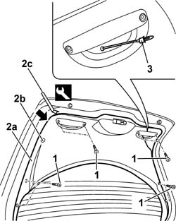

7015A04 TAILGATE INTERIOR PANEL - R+R
- Path
- Procedures > 70 FITTINGS > 7015 TAILGATE/FLAP > 7015A TAILGATE ASSEMBLY > 7015A04 TAILGATE INTERIOR PANEL - R+R
- Kind
- repair procedure (removal / refitting; the operation number is the code)
- Applies to
- all engines; all production periods
- Interactive page
- https://sloeber94.github.io/elrnDB-aGt/en/#/125001809
Applies to: all engines; all production periods
 Removing
Removing
 Refitting
RefittingOpen the tailgate.
1. Unscrew the panel retaining bolts.
2. Remove the panel (2a) after having released it from the inner retainers (2b) using the special tool (2c).
 | Name | Country |
|---|---|---|
2c | Scraper blade | 1.823.015.000 |
3. Extract the cable duct rubber mounting and release the tailgate opening safety cable.

Applies to: all engines; all production periods
Refitting
RemovingCheck that the panel is undamaged and that the retainers are undamaged and correctly positioned.
Pass the tailgate opening safety cable through the opening by the right handle and position the cable duct rubber mounting.
Fit the panel.
Fit the panel, engaging the retainers.
Tighten the panel fixing bolts.
Topics that link to this page (8)
- 5505B55 TAIL-GATE WIRING - R R
- 5505C41 CABIN WIRING - R R
- 7015A58 INTERNAL TAILGATE MOULDING (ONE) - R+R
- 7015B70 TAIL-GATE LOCK MOTOR - R R AND CHECK LOCK SUPPLY LINE
- 7035B14 REAR WINDOW GLASS R R INCLUDES CLEANING OF HOUSING
- 7055A83 BADGE ON TAILGATE - R.R.
- 7205E56 STRIPPING TAILGATE
- 7210E56 TAIL-GATE